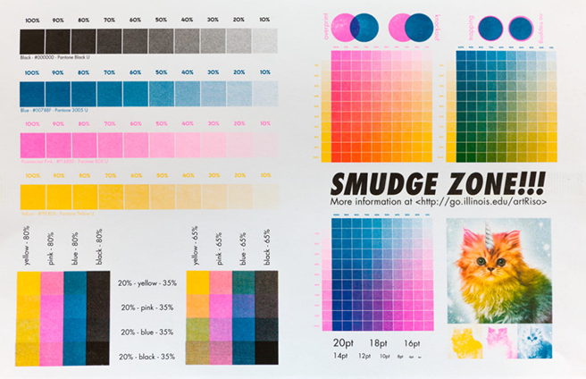

Refuge: A Collection of Urban Sanctuaries is a zine series and gallery installation covering urban green spaces in New York City. The project explores the history, evolution, and cultural impact of these spaces. This website archives the zine series, which currently includes three volumes on Washington Square Park, Collect Pond Park, and the Brooklyn Heights Promenade.
This project was my undergraduate thesis project at New York University's Tandon School of Engineering, within the Integrated Design and Media department. Refuge was presented at the 2024 IDM Showcase.
Hey, I’m Araceli, a designer and printmaking lover. I love creating and admiring print media—especially zines. Zines are all about self expression and experimentation. They allow us to share perspectives on niche topics that may not be covered in mainstream media. Inspired by my favorite NYC green spaces, I created Refuge to explore their histories and cultural impact, raising awareness about the stories behind the spaces we occupy.
Refuge was printed exclusively with a risograph printer, courtesy of NYU’s IDM Design Lab. I was first introduced to this printing method my sophomore year of college when I used it to create a poster series. I liked how textured and unique each print came out.
Courtesy of University of Illinois Urbana-Champaign School of Art & Applied Arts
Risograph printing is imperfect. Each color is printed one at a time in separate layers, similar to screen printing. To prepare digital files you need to separate your files into individual color layers using something like Adobe Photoshop or p5.riso, and save each color layer into a separate greyscale pdf file. For each layer, the risograph creates a “master” aka a stencil that it uses to print out images. You must then manually print each color layer by loading your desired ink drum and re-feeding your paper into the printer manually each time. This can cause slight misalignments or registration errors for prints. The eco-friendly soy-based inks used for this printing method also don’t fully absorb into the paper and can vary in color depending on the paper, resulting in subtle texture and ink inconsistencies. Each print, although prepared the same way, may have many variations in appearance.